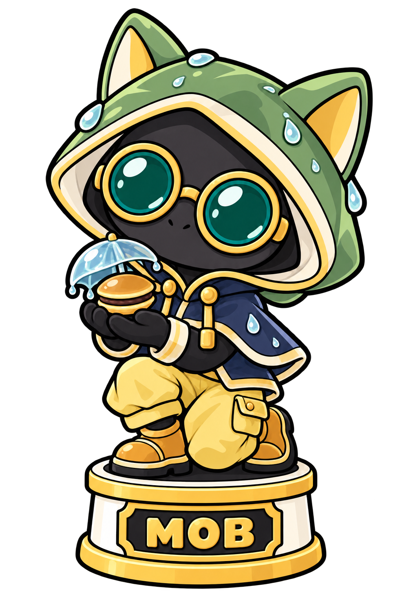
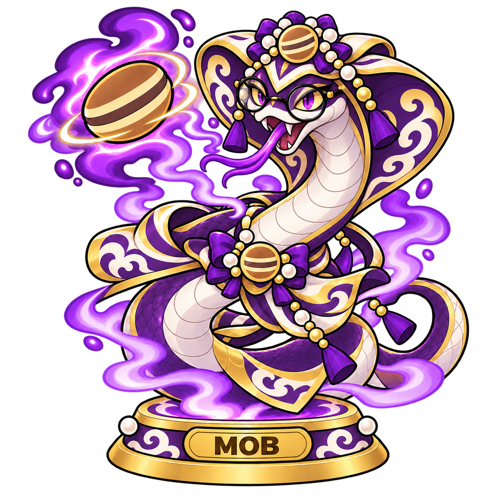
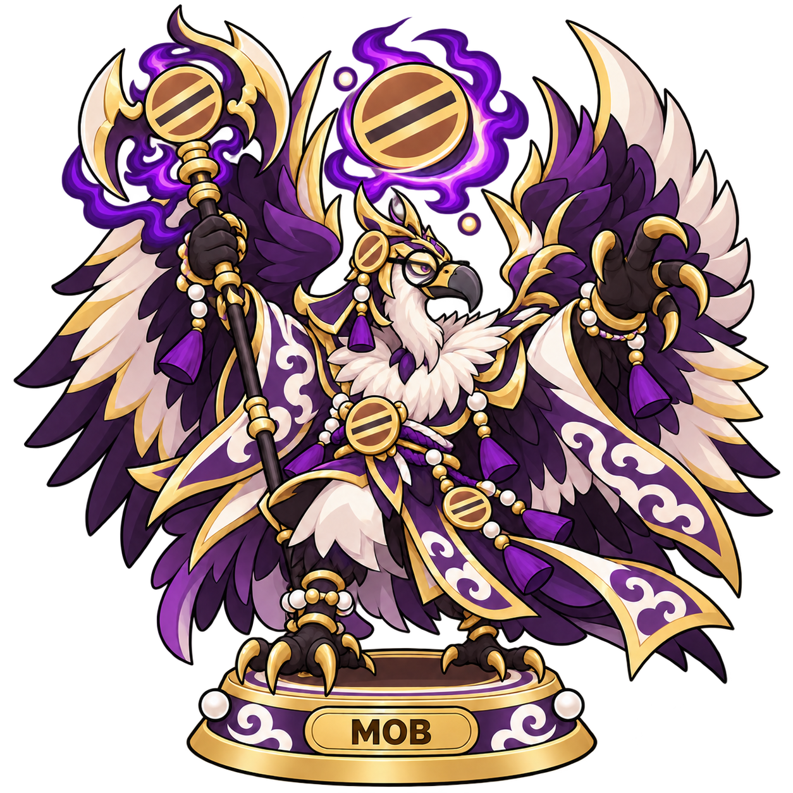
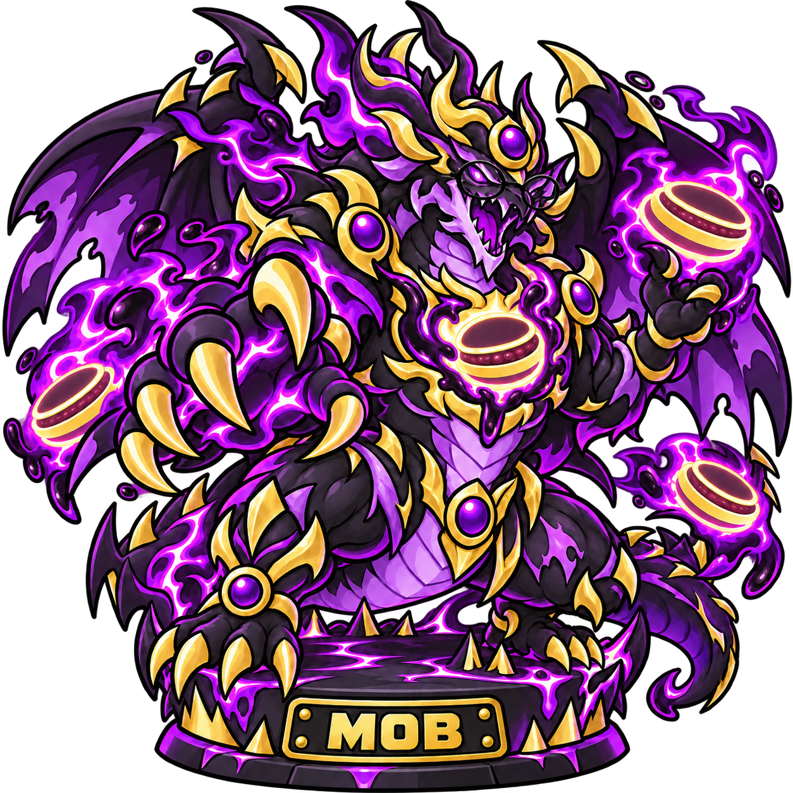
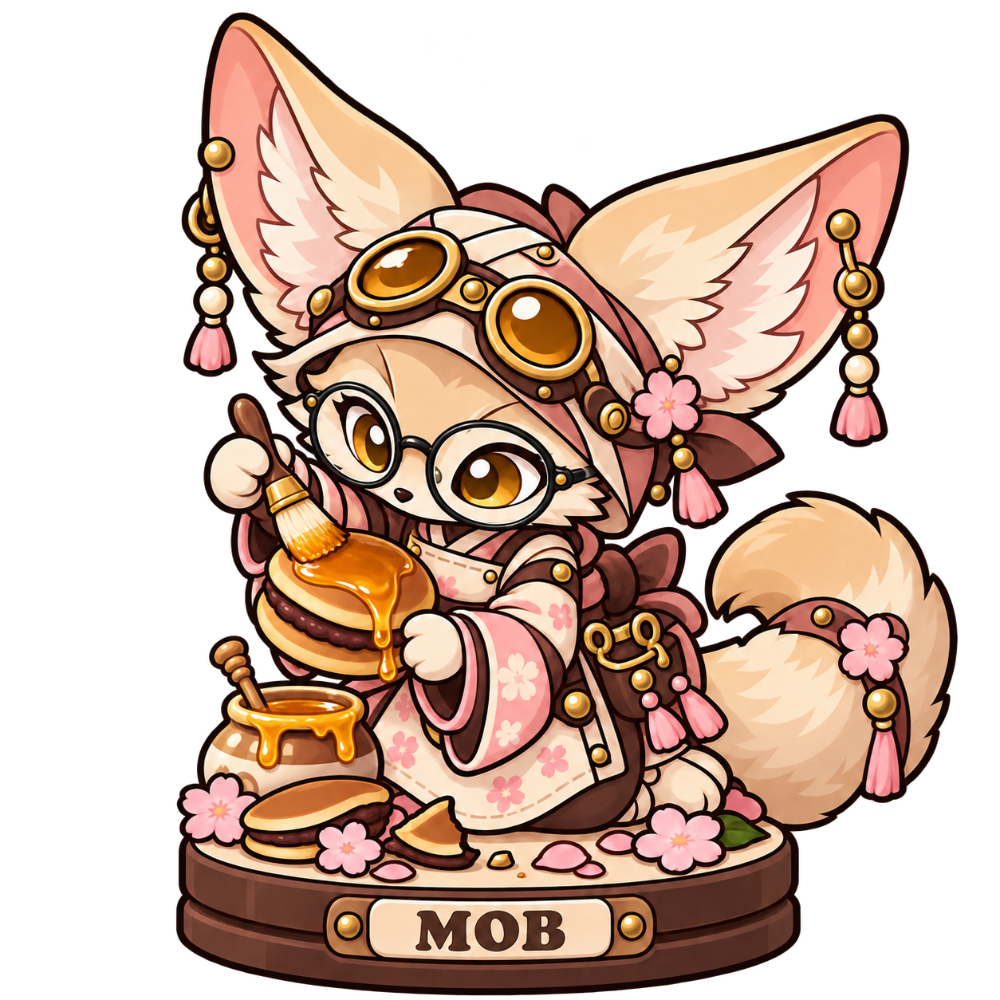
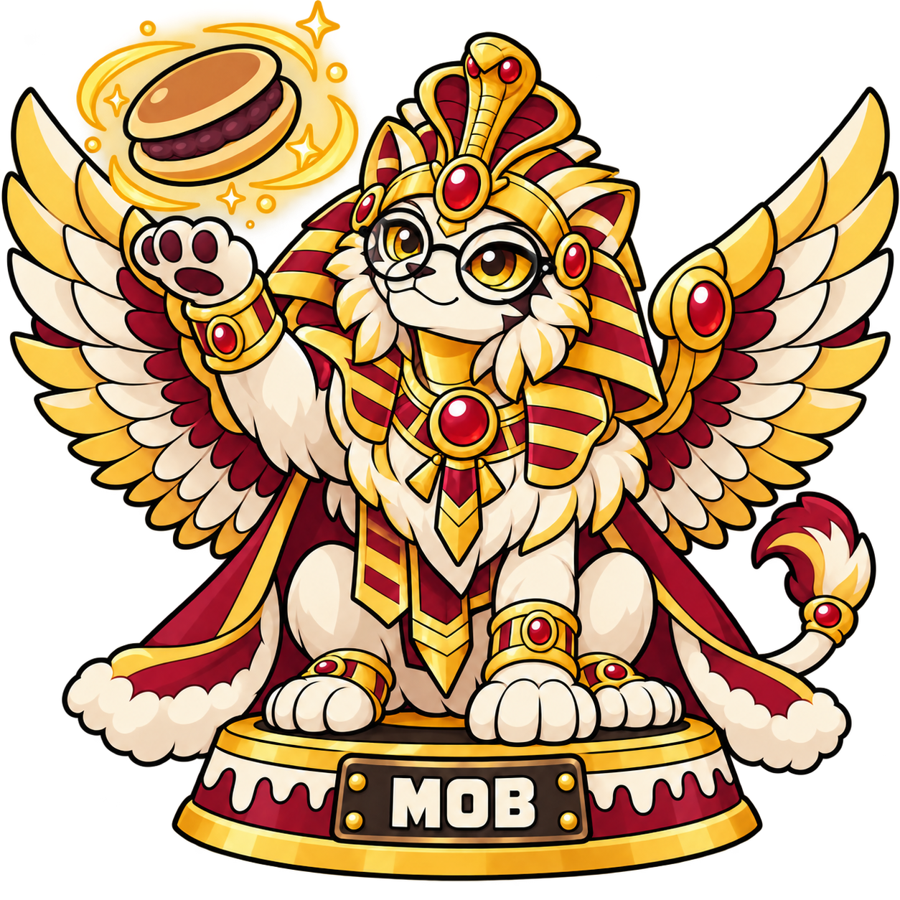
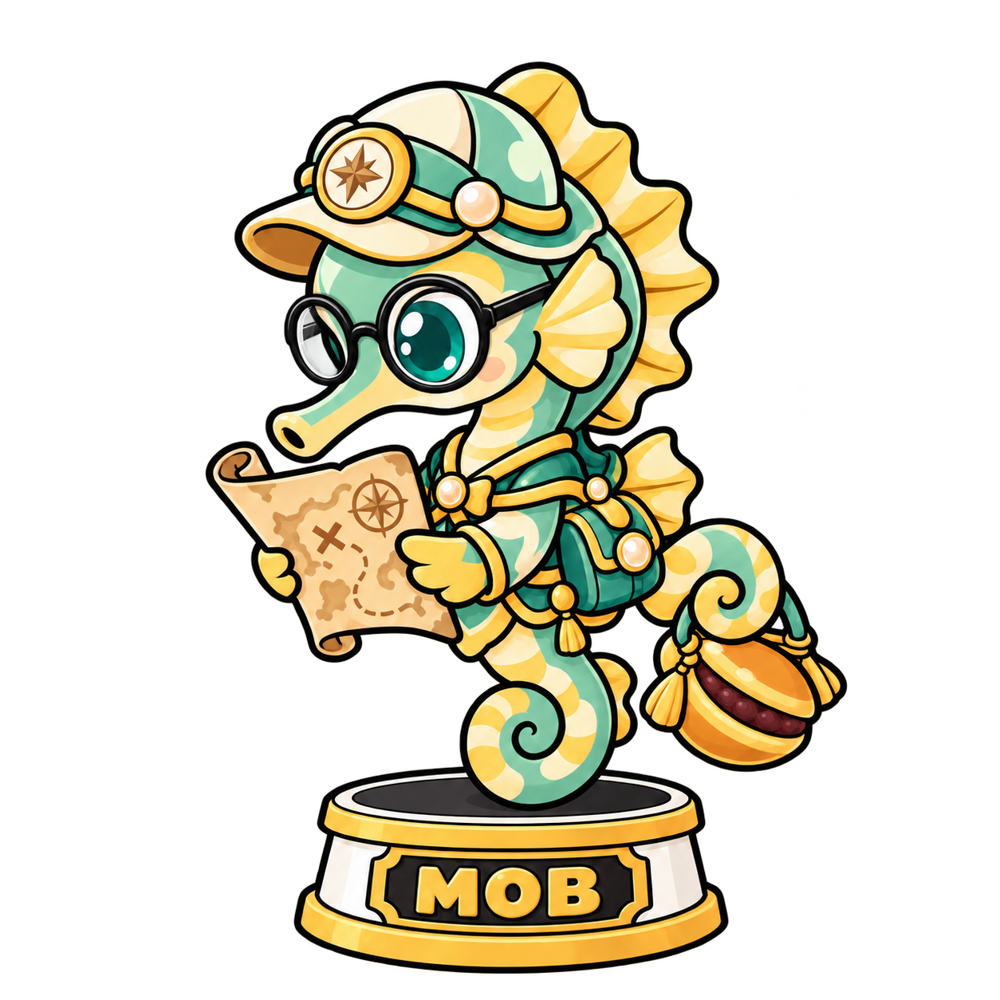
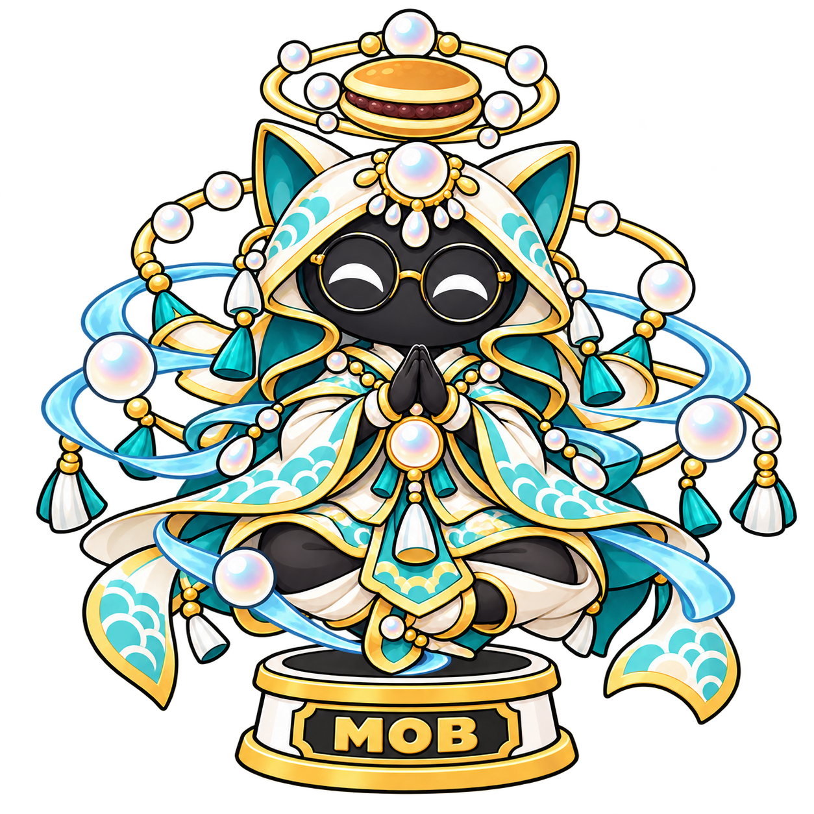

モブオアシア
R／seed／風 ATK 65・DEF 90ひとくちのおもてなし
自分のライフを20回復し、味方1体のDEFを10アップする。
砂漠23体／海底16体。ATK・DEFは素の数値です。MOBソウルフュージョン強化は別途加算されます。
ひとくちのおもてなし
自分のライフを20回復し、味方1体のDEFを10アップする。
砂に眠る補給品
シードデッキから1体ドローする。
あつあつあんこ弾
相手のライフに20ダメージを与える。
黄金の包帯
味方1体のDEFを15アップする。

泡玉シールド
攻撃対象となった味方のDEFを20アップする。
月影のまどろみ
相手1体のATKを15ダウンする。
焼きたての差し入れ
自分のライフを30回復する。
きよらかな潮水
味方1体のスキルによるATK・DEF低下を解除し、自分のライフを15回復する。防御で失ったDEFは戻らない。
海底への贈り物
シードデッキから1体ドローし、自分のライフを10回復する。
砂風のエール
味方1体のATKを15アップする。
とろける砂の呪い
相手1体のDEFを15ダウンする。
翡翠のお茶会
自分のライフを25回復し、味方1体のATKを10アップする。
月読みの封砂
相手1体のATKを20ダウンする。
焦がしあんこの炎
相手1体のDEFを20ダウンする。
砂金の護符
このフィギュアのDEFを25アップする。
恵みのオアシス
自分のライフを30回復し、「砂漠を癒すどら焼き」タグを持つ味方全体のDEFを15アップする。
紅蓮の焼き印
このターン、このフィギュアのATKを35アップする。相手のライフに20ダメージを与える。
不落の黄金盾
このフィギュアのDEFを30アップする。このターン、相手はこのフィギュアを優先して攻撃対象に選ぶ。
潮流の結界
自分のライフを20回復し、自分の場の水属性フィギュア全体のDEFを20アップする。

紫煙の砂嵐
相手全体のATKを15ダウンする。
浄化の潮風
味方1体のスキルによるATK・DEF低下を解除し、ATKを10アップする。自分のライフを30回復する。防御で失ったDEFは戻らない。
秘伝のあんこ魔法
シードデッキから1体ドローし、このフィギュアのATKを20アップする。
紅砂の突破槍
このターン、このフィギュアのATKを30アップし、守護を無視して攻撃対象を選べる。
秘宝の潮騒
自分のライフを25回復し、自分の場の水属性フィギュア全体のATKを15アップする。
【パッシブ：潮騒アンサンブル】このフィギュアが場にいる間、このフィギュア以外の味方の水属性フィギュアのATKを10アップする。
海底秘宝の祝福
自分のライフを40回復し、自分の場の水属性フィギュア全体のDEFを25アップする。
【パッシブ：秘宝姫の加護】このフィギュアが場にいる間、このフィギュア以外の「海底の秘宝どら焼き」タグを持つ味方のDEFを15アップする。

紫砂の秘術
相手1体のATKを30ダウンし、相手のライフに20ダメージを与える。
【パッシブ：秘術の研鑽】このフィギュアがソウルスキルを発動するたび、このフィギュアのATKを10アップする。

黒蜜の王域
相手全体のATKを20ダウンし、このフィギュアのATKを20アップする。
【パッシブ：黒蜜の覇気】このフィギュアが攻撃を宣言するたび、このフィギュアのATKを10、DEFを5アップする。

花蜜のリペアグレーズ
味方1体のスキルによるATK・DEF低下を解除し、自分のライフを40回復する。防御で失ったDEFは戻らない。
からくり補給
シードデッキから1体ドローし、味方1体のDEFを20アップする。

癒砂王の大饗宴
自分のライフを50回復し、「砂漠を癒すどら焼き」タグを持つ味方全体のDEFを20アップする。
【パッシブ：癒砂王の号令】このフィギュアが場にいる間、このフィギュア以外の「砂漠を癒すどら焼き」タグを持つ味方のATK・DEFを10アップする。
真珠の道しるべ
自分のライフを20回復し、味方1体のDEFを10アップする。
珊瑚のおやつ
自分のライフを30回復する。
灯火の補給便
シードデッキから1体ドローする。
潮星の照準
相手1体のDEFを15ダウンする。

秘宝への追い風
味方1体のATKを15アップする。
泡宝箱の錠前
このフィギュアのDEFを25アップする。
潮音の応援歌
自分の場の水属性フィギュア全体のATKを10アップする。

聖真珠の祈り
自分のライフを35回復し、「海底の秘宝どら焼き」タグを持つ味方全体のDEFを15アップする。
蒼潮の突破槍
このターン、このフィギュアのATKを30アップし、守護を無視して攻撃対象を選べる。